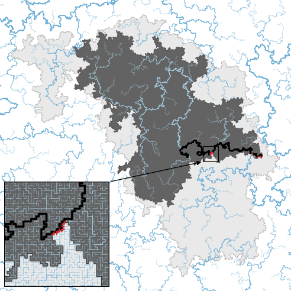

An accompanying Lean 4 formalization using Mathlib is maintained in a repository, with listed literature inputs as assumptions and a paper-to-declaration correspondence.
Abstract
In the abelian sandpile model on $\mathbb{Z}^d$, a site with at least $2d$ grains topples by sending one grain to each neighbor. In a box $[-L,L]^d$ whose boundary absorbs grains, adding grains at random sites and toppling defines a Markov chain, and Athreya and Járai (2004) constructed the stationary state on $\mathbb{Z}^d$ as the limit of its stationary distributions as $L\to\infty$. By a formula of Dhar (1990), when a grain is added at the origin of a sandpile in the stationary state, the expected number of topplings at a site in the resulting avalanche is proportional to the Green function of simple random walk from the origin. This Green function is finite for $d\geq3$, where Járai and Redig (2008) proved that avalanches are almost surely finite, and infinite for $d=2$. We prove that for $d=2$ avalanches are nevertheless almost surely finite: the probability that an avalanche reaches distance $R$ is at most a negative power of $\log R$. The proof follows the avalanche backward and reduces the question to an estimate for the uniform spanning tree, which we prove by a multiscale electrical argument.
Problem
In the stationary state of the abelian sandpile model on Z^2, the expected number of topplings at a site is infinite. Whether avalanches are nevertheless almost surely finite was a long-standing open question.
Approach
Each avalanche is followed backward through its sequence of inverse waves, which reduces the tail bound to the expected reciprocal of an edge count in the uniform spanning tree. Using Wilson's algorithm, this count is identified with the number of edges in a random two-colored rooted forest. A multiscale electrical argument then bounds it from below: effective conductance estimates at each scale, plus a second-moment bound via Kenyon–Wilson grove identities. A Lean 4 formalization using Mathlib accompanies the paper, taking explicitly listed standard results as inputs.

Figure 1. An avalanche, in light gray, with one of its waves in dark gray. The burning bijection [ Majumdar and Dhar, 1992 ] , applied separately to the wave and to the rest of the box, turns the sandpile left by the wave into two spanning trees, in light and darker blue. Joining them along a red edge makes the wave the set of vertices whose paths to the sink use that edge. The black paths join th
Results
In two dimensions, avalanches are almost surely finite. The probability that an avalanche reaches distance R is at most C(log R)^{-a}.